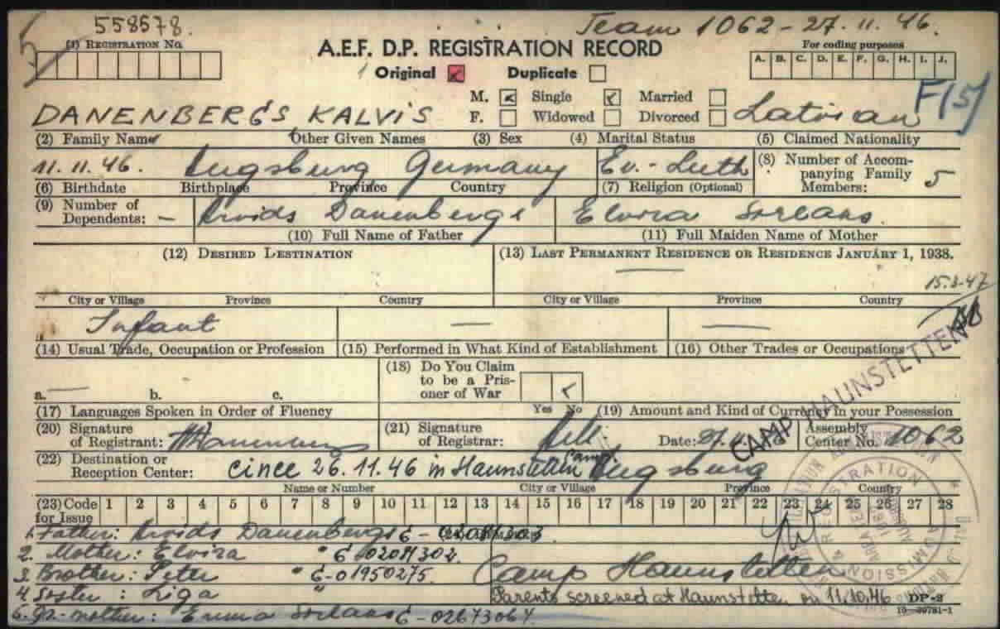
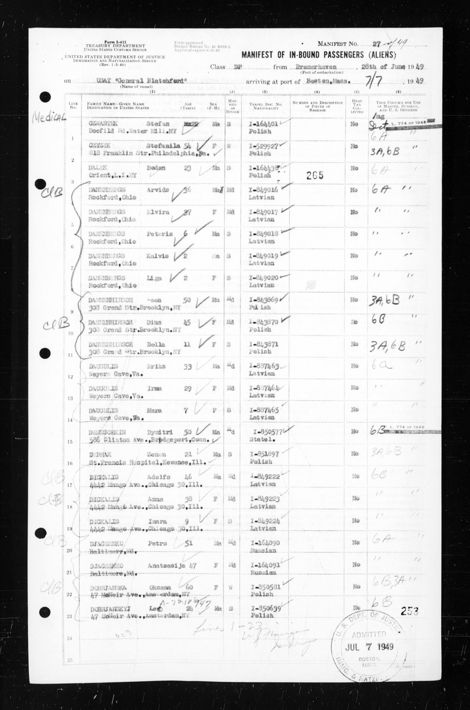
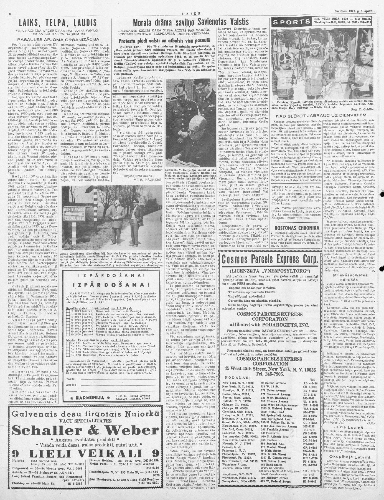
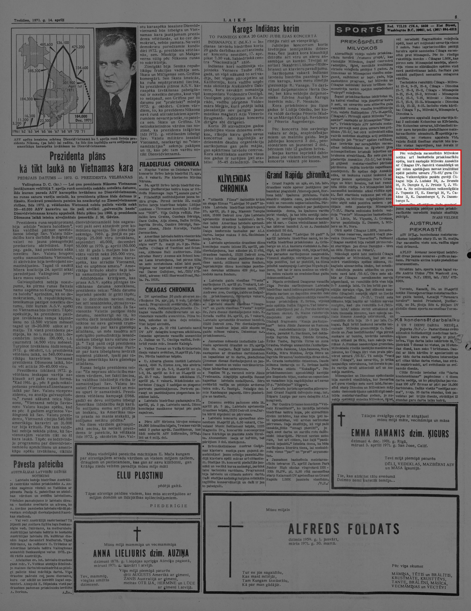
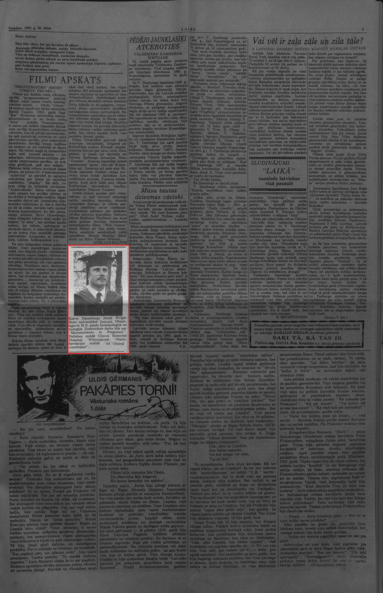

Kalvis Danenbergs b. 1946
Peter's uncle.
Living. As for every living relative on this site, the birth date is given by year only, and no current address is shown.
Also recorded as Kalvis (Melinda); Kalvis Danenberg.
Kalvis Danenbergs was born in 1946 in Haunstetten DP camp, Augsburg, Bavaria, Germany3,4,5, the son of Arvīds Fricis Danenbergs and Elvīra Antonija Sirlaka4,29,30,31,32. He arrived at Boston, Massachusetts, United States on 7 Jul 194918.
Family
- Parents
- Arvīds Fricis Danenbergs 1913–1996 and Elvīra Antonija Sirlaka 1912–2011 documented
- Partner
- Melinda Lee Berger b. 1947
- Children
- Justin Danenbergs b. 1975 documented
Life events
| Event | Date | Place and details |
|---|---|---|
| Born | 1946 | Haunstetten DP camp, Augsburg, Bavaria, Germany Preferred version: His DP record: 1946, Haunstetten. Raimonds's MyHeritage tree (2026) gives 1947, no record cited.3,4,5 |
| Born | 1947 | According to an online family tree6 |
| Arrived | 7 Jul 1949 | Boston, Massachusetts, United States18 |
| Lived | 13 Jul 1949 | Liberty Township, Mercer County, Ohio, United States7,8 |
| Lived | bet 1951 and 1965 | Tiffin, Ohio, United States9 |
| Education | bet 1955 and 1956 | Bascom, Seneca County, Ohio, United States In the third grade at Hopewell-Loudon School, Bascom, Seneca County, Ohio, in the school year 1955–56, photographed in Mrs Norma Goodwin's class. His twin sister Līga is in the parallel third-grade photograph (Mrs Pauline Fruth's class) and their elder brother Peter is in the eighth grade. THIS IS…11 |
| Education | 21 Dec 1962 | Ohio, United States Bellevue Gazette, 22 Dec 1962, p. 8 (basketball report, Hopewell-Loudon vs Thompson; the game date 21 Dec is the sweep's inference, the headline and masthead date line were not separately read). Read by eye: "For Hopewell - Loudon Marvin King scored 17 points, Bob Sendelbach, 16, Dean King, 14,…12 |
| Education | 30 Jan 1964 | Bascom, Seneca County, Ohio, United States Bellevue Gazette, 30 Jan 1964, p. 6 (Seneca County League basketball preview, Hopewell-Loudon squad). Read by eye: "...who could be starters Friday, are as follows: Steve Creeger, 6' forward, Paul Porter, 6' guard, Ed Schubert, 5'10" guard, and Russ Crum, a sophomore who plays in several…13 |
| Note | Jul 1964 | Kalamazoo, Michigan, United States Named in the caption of the group photograph "Jauniešu iesvēte" (youth confirmation) of the Kalamazoo Ev. Lutheran Latvian congregation: "Kalvis Dannenbergs" is the sixth name in the second-row list. The page spells the surname with double n (Dannenbergs). The caption does not use the word…19 |
| Religion | 8 Jul 1964 | Kalamazoo, Michigan, United States Same caption: second row, 6th of 10, "Kalvis Dannenbergs" (double n). Confirmation (iesvēte) class, Kalamazoo Ev. Lutheran Latvian congregation. Date is the issue date; the service date is not given.28 |
| Education | 24 Sep 1964 | Bascom, Seneca County, Ohio, United States Senior at Hopewell-Loudon High School (Bascom, Seneca County, Ohio); named a National Merit Scholarship semifinalist (24 Sep 1964) and received honorable mention among 18,217 Ohio high school seniors in the 1964 Ohio General Scholarship Test (21 Dec 1964); also played varsity basketball for…14 |
| Note | 3 Jan 1971 | Columbus, Ohio, United States Applied for a marriage licence in Franklin County, Ohio (published 3 January 1971): Kalvis Danenbergs, age 24, student, residing at [address omitted], Columbus, and Melinda L. Berger, age 23, residing at [address omitted], Columbus.20 |
| Note | Apr 1971 | Milwaukee, Milwaukee County, Wisconsin, United States Laiks sports column (article headline per the library: 'Priekšsacīkstes sākušās'), read by eye on the whole page: in a report on a game of Milwaukee Auseklis (the head of the article was not read; the preceding text names Indianapole VV and its scorers K. Šteinmanis /24/, Kalepu /21/, Fricsonu…21 |
| Note | Apr 1971 | Milwaukee, Milwaukee County, Wisconsin, United States Read by eye on the whole page, right-hand column, in a report on the Middle States preliminary round at Milwaukee (the heading was not read; the library has 'PRIEKŠSPĒLES MILVOKOS'): after the volleyball games 'notika arī basketbola priekšsacīkšu spēle, kurā sastapās Milvoku Auseklis ar Čikagas…22 |
| Note | 16 May 1973 | Ohio, United States Named third from the left in the front row ("1. rindā no kreisās H. Lapiņš, R. Bedrītis, K. Danenbergs, G. Fricsons") of the photograph of the Dayton "Rīga" basketball team, which won the US Midwest Latvian championship for the first time after a 15-year break. The sweep's second row (Ē. Celmiņš,…23 |
| Lived | bet 28 Sep 1973 and 2026 | Midland, Clinton County, Ohio, United States10 |
| Note | May 1974 | Ohio, United States Named third from the left in the front row ("1. rindā (no kreisās) H. Lapiņš, R. Bedrītis, K. Danenbergs, M. Liepiņš") of the Dayton "Rīga" team photograph: the team again won the Midwest championship and was to play in the US Latvian finals in Chicago on 25 and 26 May. Second row on the page: "J.…24 |
| Note | Sep 1983 | Columbus, Ohio, United States Named "K. Danenbergs" as a finalist in the women's-and-mixed-doubles photo caption and, in the text, as the brother partnering his sister L. Šūbacha in the mixed-doubles final (lost 6-3, 3-6, 6-3 to A. and M. Zeps). Initial only; Columbus, Ohio championships. Issue date 24 September 1983, read on…25 |
| Education | Jun 1986 | Ohio, United States Portrait of a man in cap and gown with a caption: in June (1986, from the issue date) he received an M.S. in "farmakoloģijā un bioloģijā" (pharmacology and biology) at Wright State University in Dayton, Ohio; thesis "Micronutrients in Pregnancy". The caption names no year for the degree: "jūnijā"…15 |
| Work | Jul 1986 | Wilmington, Clinton County, Ohio, United States Same caption: "Patlaban strādā Clinton Memorial Hospital, Wilmingtonā, Ohaijo, farmācijas nodaļā kā 'clinical coordinator'" - currently working in the pharmacy department of Clinton Memorial Hospital, Wilmington, Ohio, as "clinical coordinator" (as of 30 July 1986).16 |
| Note | Jul 1986 | Garezers (Latvian centre), near Three Rivers, Michigan, United States Named "K. Danenbergs" in the first row of the Garezers tennis-week photo caption (see the entry for Līga for the full caption) and, in the report below the photograph (read on the page image, second box), as the beaten finalist in the doubles: "Pāru spēlēs nepārspēti palika J. Valdmanis ar E.…26 |
| Note | Jul 1991 | Garezers (Latvian centre), near Three Rivers, Michigan, United States Named "K. Danenbergs" in the back row of the 1991 Garezers tennis-week photo caption, next to L. Schubacha. Initial only. Issue date 13 July 1991 read on the masthead.27 |
| Work | 1 Aug 2000 | Wilmington, Clinton County, Ohio, United States A registered pharmacist (R.Ph.) at Clinton Memorial Hospital, Wilmington, Ohio. He is thanked by name in the acknowledgements of a peer-reviewed clinical review — "The authors thank Karen Mandell, Pharm.D., University of Cincinnati, and Kalvis Danenbergs, R.Ph., Clinton Memorial Hospital,…17 |
Possible records (not confirmed)
Records that may concern him, but don't settle it: an initial and a surname only, a family recollection, or a reading that needs a second look. Each links to the record.
- Marriage 1973~ Clinton County, Ohio, USA: LEAD, not a fact. Kalvis and Melinda both registered to vote in Clinton County on the same day, 28 September 1973, which is the sort of thing a newly married couple does when they set up house; Melinda had left Blanchester High School in 1965 and is recorded under the married name Danenbergs from then on. No marriage record was found. Elvīra Danenbergs's 2011 obituary (already in the tree) names…33 An inference from a shared voter-registration date; no record of a marriage was found.
- Education 1971-04 University of Wisconsin, USA: In the fraternity news of Universitas, in the paragraph "Korporācijā uzņemti:" (admitted to the fraternity) that follows the "Tervetia." paragraph: "Kārlis Danenbergs, pharm., Univ. of Wisconsin", first of four names. The sweep put it under Tālavija ("L! K! A!") and as "Kārlis [Kalvis]"; on the page the paragraph belongs to Tervetia (bold heading "Tervetia." on the paragraph before; the next…34 Surname Danenbergs, "pharm." and the University of Wisconsin (Peter was in Madison in 1970-71; Kalvis became a pharmacist), but the first name on the page is Kārlis, not Kalvis, and no relation is stated. Could be a namesake or a misprint for Kalvis. See lead press-laiks-karlis-danenbergs-tervetia-1971.
- Other 1994-09 Columbus, Ohio, USA: Possibly Kalvis: the men's-doubles report says Kārlis Antons and his father Ēriks beat "Danenbergus (tēvs un dēls)" 6-2, 6-2 before the final. No first names; the identification as Kalvis and his son Justin is an inference (Kalvis plays at the same championships, mixed doubles with L. Šūbacha, lost 10-1 to Hugo and Alekša Hūns; see pl-052 and old 27). See also the entry for Justin.35 Only "Danenbergus (tēvs un dēls)": a father-and-son pair; Kalvis (b. 1946) with son Justin (b. 1975) fits, but another Danenbergs father and son is not excluded on the page.
- Other 1969-03 USA (Middle States preliminary basketball round; Milwaukee Auseklis v. Chicago DV, place not read): Laiks sports column (the library text calls the article 'SPORTS … Basketbolā priekšsacīkstes …'; the heading was not read), read by eye on the whole page: the box score of the Milwaukee Auseklis v. Chicago DV game (83-78 per the library text; the score line itself was not re-read by me): 'Milvoku "Auseklis": E. Venta 8, E. Ezeriņš 13, I. Zallaps 12, V. Čakans 16, Juris Kīns 14, K. Danenbergs 18,…36 Initial + surname only; the same team (Milwaukee Auseklis) carries K. Danenbergs in 1971 (pl-084). In March 1969 Kalvis (b. Nov 1946) would be 22; Universitas lists a 'Kārlis Danenbergs, pharm., Univ. of Wisconsin' (pl-041), consistent with Wisconsin but not proof that K. is Kalvis.
- Other 1984-07 Garezers (Garezerā), Michigan, USA ('tenisa nedēļa'): Printed: 'Vīr. viensp. 1. O. Rēķis, 2. K. Danenbergs.' (men's singles: 1st O. Rēķis, 2nd K. Danenbergs). Only the initial and surname are printed; the same report names L. Šūbacha, so a Danenbergs at the same tournament as his sister is plausible but unproven. Not in the sweep's ledger entry. Year and date are the library's, masthead not read.37 Initial K. plus surname Danenbergs only; no town or relation on the page.
- Other 1987-07 Garezers / USA (tennis report): Short report 'Tenisa nedēļa' at Garezers: 'Šogad tradicionālajā Garezera "tenisa nedēļā" bija mazāk dalībnieku nekā jebkad agrākajos gados — 12.' The Švernu family of Kalamazoo dominated; in the men's open Jānis Šverns beat Kalvi Danenbergu (the final, 6-4, 6-2). NO Šūbacha/Schubach in this report (women's: Ieva Šverna beat Ilze Antone). I did not read the byline with certainty, the report's…38 Only given name and surname in the accusative; no town or relation printed. Same tournament as pl-090/pl-091 (Garezers tennis week, 1984), so a Danenbergs there is plausible but unproven.
- Other 1987 Garezers / USA (tennis report): Read by eye near the top of the right-hand column: 'Vēl Valdmanis pieveica K. Danenbergu (Deitona) 6-2, 6-1' (Valdmanis beat K. Danenbergs of Dayton 6-2, 6-1). A second line, lower in the same column, in the paragraph on the champion pair: 'Meistarpāris vēl uzvarēja I. Švernu ar R. Tiltiņu 6-3, 6-2 un Agitu Hūnu ar K. Danenbergu 7-5, 6-1' (the champion pair also beat Agita Hūns with K.…39 Initial K. and surname only; the town Dayton links him to the Dayton Danenbergs of old 29, but no relation is printed here.
- Other 1988-10 USA (tennis report): 6, DIVL398): 'Zepi pārspēja L. Šūbachu ar Danenbergu 6—2, 6—2'. The partner of L. Šūbacha is printed as 'Danenbergu' (accusative) with NO initial and no town. Given that L. Šūbacha is Līga and that she played with her brother K. Danenbergs in 1983 (pl-046/047), it may be Kalvis, but the page does not say; a human should decide (could also be another Danenbergs, e.g. Pēteris, or a Dayton…40 Surname only; the first initial is not printed. Inferred from the partner being a Danenbergs paired with L. Šūbacha.
- Other 1989-09 Columbus, Ohio, USA (tennis championships): Laiks issue 848456 p.6, zone DIVL393 (library date 30 Sep 1989; masthead and headline not read). The report (the library's text says Columbus, Ohio, early September, ALA tennis championships; only the foot of it was read by eye). Read by eye, lines at the foot of the column: 'Valdmani, pārspējot I. Kalepu un J. Švernu 6-3, 6-3. Pirms tam viņi uzvarēja R. Baumani/M. Jubertu 6-3, 6-3 un…41 Surname only; no initial or town. Plausible Kalvis (K. Danenbergs of Dayton in 1987 played the same championships) but not shown.
- Other 1994-09 Columbus, Ohio, USA (1994 tennis championships, reported in Laiks 11 Jan 1995): Laiks issue 853230 p.6, zone DIVL397; the whole-page overview shows the sports-page article headed 'Latviešu teniss — 1994' (a review of the 1994 tennis season; masthead date NOT read). Read by eye in the participant list (zoom on the left column; the left ~30 characters of each line fell outside my zoom): '[Kolumbusā] spēlēja: Ēriks, Kārlis un [Rūdis?] Antoni, Edgars, Roberts, Ēriks un…42 'Danenbergi' (plural) is read by eye after '…ustīns', so two Danenbergs are listed, but 'Kalvis' is from the library text only; link to Kalvis rests on that and on the father-and-son pair of the 1994 results (pl-053).
Photographs


Records













Sources
- Elvira A. Danenbergs (Nee Sirlaks), Milwaukee Journal Sentinel, 23 June 2011.
Loving mother of Peter (Kathleen), Liga (Wolfhart) Schubach and Kalvis (Melinda). Dear grandmother of Liga, Peter and Justin. Great-grandmother of Mneme.
Named as son in Elvīra's obituary; spouse Melinda.
- MyHeritage family tree 'Dzimta' of Peter's third cousin (his family site), member GEDCOM export of 26 Oct 2026, I500162 (person-6500162), GEDCOM lines 10139–10172.
NAME Kalvis /Danenberg/
His confirmed Smart Match with another tree: Voroņinu dzimtas lapa, https://www.myheritage.lv/person-1002321_OYYV6GENXOY2D7YW6XGE4NH6BKEVORA_OYYV6GENXOY2D7YW6XGE4NH6BKEVORA/kalvis-danenbergs (added by confirming the match).
- Standesamt Augsburg, Form 6, list of births of Latvians, 18 June 1947, DE ITS 2.1.1.3 BY 011 6 LET ZM, DocID 85921424.
25. Danenbergs | Liga | [date] Augsburg | w | Arvids D. | Lettl. | Elvira, geb. Sirlaks | Lettl. | Haunstetten, Lkr. Augsbg. / 26. " | Kalvis | … | m
LIVING. Twins. Parents: Arvids D. and Elvira, née Sirlaks. Two birth certificates per child were enclosed with the list.
- Declaration of Intention No. 134, Arvids Danenbergs, Mercer County Common Pleas, Celina, Ohio, 14 Aug 1950.
Kalvis Danenbergs--M--1946-Augsburg, Germany--Rockford, Ohio / Liga Danenbergs-F--1946-Augsburg, Germany--Rockford, Ohio
From both parents' declarations. The 1950 census has 'Kalvis V'.
- Kalvis Danenbergs, Age 79, Midland, OH.
Overview of Kalvis Danenbergs — Lives in: Midland, Ohio. DOB: 1946
CONFIRMS the Arolsen date and SETTLES the open conflict recorded in data/people/kalvis-danenbergs.yaml. Raimonds's MyHeritage tree gives "1947" with no record cited; the Ohio Secretary of State's voter file, as republished by Ohio Residents Database, gives "DOB: 1946". That is a third independent agreement with the 1946 Arolsen civil registry list and with both parents' 1949 naturalisation declarations.
- MyHeritage family tree 'Dzimta' of Peter's third cousin (his family site), member GEDCOM export of 26 Oct 2026, I500162 (person-6500162), GEDCOM lines 10139–10172.
BIRT · 1947
- Eight Latvian DP's Will Make Homes In Mercer Co., The Journal-Gazette (Fort Wayne, Indiana), 14 July 1949, p. 13.
The family of six includes Arvids Danenbergs. 36. his wife. Elvira. 37, their three children. Peter. 6, a set of twins. Liga and Kalvis. 2>2, and Mrs Dancnherg’s mother. Mrs. Emma Sirlaks
Translation: The family of six includes Arvids Danenbergs, 36, his wife, Elvira, 37, their three children, Peter, 6, a set of twins, Liga and Kalvis, 2 1/2, and Mrs. Danenbergs's mother, Mrs. Emma Sirlaks.
Residing at age 2 1/2 with parents Arvids and Elvira Danenbergs, brother Peter (6), twin sister Liga (2 1/2), and maternal grandmother Emma Sirlaks at the tenant house on the D. R. Smalley farm in Liberty Township, Mercer County, Ohio.
- Household of Arwids F Danenbergs, Liberty Township, Mercer, Ohio.
Kalvis V Danenbergs: Race = White; Birth 1947 @ Germany; Residence 1949; Census 10 April 1950 @ Liberty Township, Mercer, Ohio, United States; RelationshipToHead=Son; Age=3
After landing in Boston on 7 July 1949, he lived with his family on the farm of sponsor Robert M. Hawk in Liberty Township, Mercer County, Ohio (Rockford mailing address), enumerated as 'Kalvis V Danenbergs' (age 3) in the 10 April 1950 US Census.
- Tiffin, Seneca County, Ohio residence of the Danenberg family (1951–1960).
1953 Danenbergs Elvira Mrs pharm Mercy Hosp h23 Apple / 1956 Danenbergs Elvira (Arvids) pharmacist Mercy Hosp r RD 2 / 1958 Danenbergs Elvira Mrs pharm Mercy Hosp r RD 2 / 1959 Danenbergs Elvira Mrs pharm Mercy Hosp r RD 2 … Third Grade MRS. NORMA GOODWIN Heidelberg College … Sccmzrl [Second] Row: Nickie Chapman, Kalvis Danenbergs.
Moved with his family after about a year on the Hawk farm to Tiffin, Seneca County, Ohio (where his parents are recorded at [address omitted] in 1953 and on their [address omitted] Tiffin farm in 1956–1959 R. L. Polk city directories), attending third grade at Hopewell-Loudon School in nearby Bascom in 1955–1956.
- Kalvis Danenbergs — Voting Profile.
Kalvis Danenbergs (age 79) is currently listed at [address omitted], Midland, 45148 Ohio … Kalvis is registered to vote since September 28, 1973 in Clinton County … Voter Status: Active … Precinct Code: Jefferson … Village: Jefferson Township
Registered to vote in Clinton County, Ohio on 28 September 1973 — the same day as Melinda — and still an active registered voter there in 2026. Address [address omitted], Midland, Ohio 45148, in Jefferson Township (precinct "Jefferson", Blanchester Local school district, Ohio congressional district 15). Ohio Residents Database says he is "not affiliated to any political party"; voterrecords.com's street index says "Republican Party" — recorded both ways, since voterrecords returns 403 and only its snippet could be read.
- Scarlet and Grey 1956 — Third Grade, Mrs Norma Goodwin.
Third Grade MRS. NORMA GOODWIN Heidelberg College … Sccmzrl [Second] Row: Nickie Chapman, Kalvis Danenbergs. Ken Yamloert [Lambert], Jim Chaney, Mark Leistcr. Bobby Lowery, Mrs. Goodwin.
In the third grade at Hopewell-Loudon School, Bascom, Seneca County, Ohio, in the school year 1955–56, photographed in Mrs Norma Goodwin's class. His twin sister Līga is in the parallel third-grade photograph (Mrs Pauline Fruth's class) and their elder brother Peter is in the eighth grade. THIS IS THE FIRST DATED EVIDENCE OF WHERE THE FAMILY LIVED IN THE OHIO YEARS: the 1949 manifest landed them at Rockford, Mercer County, in western Ohio, and by the mid-1950s they were at Bascom, in Seneca County, about 80 miles north-east of it.
- Bellevue Gazette, 22 December 1962, p. 8 (Hopewell-Loudon vs Thompson basketball), Bellevue Gazette, 22.12.1962, p. 8; file bellevue_gazette_usa_ohio_bellevue_19621222_english_8.
For Hopewell - Loudon Marvin King scored 17 points, Bob Sendelbach, 16, Dean King, 14, Calvin Danenberg, 13, Ed Schubert, 8, and Steve Creeger, 3
Translation: (English)
Bellevue Gazette, 22 Dec 1962, p. 8 (basketball report, Hopewell-Loudon vs Thompson; the game date 21 Dec is the sweep's inference, the headline and masthead date line were not separately read). Read by eye: "For Hopewell - Loudon Marvin King scored 17 points, Bob Sendelbach, 16, Dean King, 14, Calvin Danenberg, 13, Ed Schubert, 8, and Steve Creeger, 3". Page prints "Calvin Danenberg" (no s). The game was played at Thompson School (the printed sub-article `Thompson Defeated`: `In a Seneca Co. League contest played at Thompson School Friday night, the Tigers were defeated 71 - 63 by the visiting Hopewell - Loudon quintet`), so `place` is the venue; Hopewell-Loudon School at Bascom, where he went to school, is his team's home and is not named on the page. Identification with Kalvis is by the later items (Hopewell-Loudon, same surname, Seneca County) and is not stated on the page.
- Bellevue Gazette, 30 January 1964, p. 6 (Seneca County League basketball preview), Bellevue Gazette, 30.01.1964, p. 6; file bellevue_gazette_usa_ohio_bellevue_19640130_english_6.
Another good point gainer on the squad is Carl Danenberg
Translation: (English)
Bellevue Gazette, 30 Jan 1964, p. 6 (Seneca County League basketball preview, Hopewell-Loudon squad). Read by eye: "...who could be starters Friday, are as follows: Steve Creeger, 6' forward, Paul Porter, 6' guard, Ed Schubert, 5'10" guard, and Russ Crum, a sophomore who plays in several positions. Another good point gainer on the squad is Carl Danenberg" (all legible on the page image; sweep's bracket "[Hopewell-Loudon]" is its own insertion). Page prints "Carl Danenberg" (broken across two lines, no period). The page puts Friday's game at Thompson School; Bascom is printed only for the earlier meeting ("the Warriors, at Bascom defeated the Thompson Tigers, 86 - 55"), so the place Bascom is the team's home, not the game. Identification with Kalvis is inferred, not on the page.
- Results Of 1964 Scholarship Tests, The Blade (Toledo, Ohio), 21 December 1964, p. 8; and 113 In Area Reach Scholarship Semifinals, The Blade (Toledo, Ohio), 24 September 1964, p. 12.
Toledo and area students receiving honorable mentions and their schools were: ... Kalvis Danenbergs. Hope Loudon: Ronald B. Diegle, Marion: Nancy E. Heffner, Start; David E. Hammer. Hope Loudon;
Translation: Toledo and area students receiving honorable mentions and their schools were: ... Kalvis Danenbergs, Hope-Loudon; Ronald B. Diegle, Marion; Nancy E. Heffner, Start; David E. Hammer, Hope-Loudon;
Senior at Hopewell-Loudon High School (Bascom, Seneca County, Ohio); named a National Merit Scholarship semifinalist (24 Sep 1964) and received honorable mention among 18,217 Ohio high school seniors in the 1964 Ohio General Scholarship Test (21 Dec 1964); also played varsity basketball for Hopewell-Loudon (9 Feb 1964).
- Kalvis Danenbergs (portrait and caption), Laiks, 30 July 1986, p. 3, Laiks, Wednesday 30 July 1986 (masthead "Trešdien, 1986. g. 30. jūlijā" read on the page), p. 3, Periodika issue 870917, article DIVL146, doc 61988005. The portrait caption sits at the foot of the left column, under the end of Anšlavs Eglītis's film review..
Kalvis Danenbergs jūnijā Wright State universitātē Deitonā, Ohaijo, ieguvis M.S. gradu farmakoloģijā un bioloģijā. Zinātniskais darbs bija par "Micronutrients in Pregnancy". Patlaban strādā Clinton Memorial Hospital, Wilmingtonā, Ohaijo, farmācijas nodaļā kā "clinical coordinator".
Translation: Kalvis Danenbergs in June at Wright State University in Dayton, Ohio, earned an M.S. degree in pharmacology and biology. His scientific work was on "Micronutrients in Pregnancy". He now works at Clinton Memorial Hospital, Wilmington, Ohio, in the pharmacy department as "clinical coordinator".
Portrait of a man in cap and gown with a caption: in June (1986, from the issue date) he received an M.S. in "farmakoloģijā un bioloģijā" (pharmacology and biology) at Wright State University in Dayton, Ohio; thesis "Micronutrients in Pregnancy". The caption names no year for the degree: "jūnijā" is June of the issue year, 1986. The sweep's quote omitted "Ohaijo," after "Deitonā"; otherwise it was exact.
- Kalvis Danenbergs (portrait and caption), Laiks, 30 July 1986, p. 3, Laiks, Wednesday 30 July 1986 (masthead "Trešdien, 1986. g. 30. jūlijā" read on the page), p. 3, Periodika issue 870917, article DIVL146, doc 61988005. The portrait caption sits at the foot of the left column, under the end of Anšlavs Eglītis's film review..
Patlaban strādā Clinton Memorial Hospital, Wilmingtonā, Ohaijo, farmācijas nodaļā kā "clinical coordinator".
Translation: Currently works at Clinton Memorial Hospital, Wilmington, Ohio, in the pharmacy department as "clinical coordinator".
Same caption: "Patlaban strādā Clinton Memorial Hospital, Wilmingtonā, Ohaijo, farmācijas nodaļā kā 'clinical coordinator'" - currently working in the pharmacy department of Clinton Memorial Hospital, Wilmington, Ohio, as "clinical coordinator" (as of 30 July 1986).
- Appropriate Prescribing of Oral Beta-Lactam Antibiotics — Acknowledgements.
The authors thank Karen Mandell, Pharm.D., University of Cincinnati, and Kalvis Danenbergs, R.Ph., Clinton Memorial Hospital, Wilmington, Ohio, for editorial assistance with the manuscript.
A registered pharmacist (R.Ph.) at Clinton Memorial Hospital, Wilmington, Ohio. He is thanked by name in the acknowledgements of a peer-reviewed clinical review — "The authors thank Karen Mandell, Pharm.D., University of Cincinnati, and Kalvis Danenbergs, R.Ph., Clinton Memorial Hospital, Wilmington, Ohio, for editorial assistance with the manuscript" — in American Family Physician, 1 August 2000 (Holten KB, Onusko EM, "Appropriate Prescribing of Oral Beta-Lactam Antibiotics", AFP 62(3):611–620, since cited over 330 times). Wilmington is the county seat of Clinton County, nine miles from his house at Midland. His son Justin is also a pharmacist.
- Manifest of In-bound Passengers (Aliens), No. 27, USAT General Blatchford, Bremerhaven 28 June 1949 → Boston 7 July 1949, NAID 76075234, image 80 of 651, object 76075314, file 41253_B124264-01101.jpg, lines 4–8.
DANENBERGS Arvids Rockford, Ohio 36 Ma Md I-849016 Latvian … ADMITTED JUL 7 1949 BOSTON, MASS.
LIVING. Manifest 27, lines 7 (Kalvis, I-849019) and 8 (Līga, I-849020); age 2; IRO roll nos. 611–612, country of birth Germany.
- Jauniešu iesvēte Kalamazū ev. lut. latv. draudzē (group photograph and caption), Laiks, 8 July 1964, p. 5, Laiks, 08.07.1964 (Periodika issue 1028428, article DIVL374, doc 72981163), viewer p. 5. The photograph sits under the "Detroitas chronika" / "Grand Rapidu chronika" columns at the foot of the page, inside zone DIVL374. The issue date is Periodika's; I did not read the masthead..
Jauniešu iesvēte Kalamazū ev. lut. latv. draudzē. 1. rindā no kreisās Līga Dannenberga, ērģelnieks prof. Ā. Ābele, māc. K. Zuika, māc. J. Meisters, māc. A. Piebalgs, māc. E. Rūsa, dr. pr-ks J. Salna un Ilze Lejiņa; otrā rindā Jānis Aivars, Mārtiņš Tolis, Maija Jirgene, Valdis Bormanis, Dace Rolle, Kalvis Dannenbergs, Liene Rava, Jānis Kirulis, Ilze Balka un Jānis Zuika A. Purmaļa foto
Translation: Youth confirmation in the Kalamazoo Ev. Luth. Latvian congregation. First row from the left Līga Dannenberga, organist prof. Ā. Ābele, Rev. K. Zuika, Rev. J. Meisters, Rev. A. Piebalgs, Rev. E. Rūsa, congregation president [dr. pr-ks] J. Salna and Ilze Lejiņa; second row Jānis Aivars, Mārtiņš Tolis, Maija Jirgene, Valdis Bormanis, Dace Rolle, Kalvis Dannenbergs, Liene Rava, Jānis Kirulis, Ilze Balka and Jānis Zuika. Photo by A. Purmaļa.
Named in the caption of the group photograph "Jauniešu iesvēte" (youth confirmation) of the Kalamazoo Ev. Lutheran Latvian congregation: "Kalvis Dannenbergs" is the sixth name in the second-row list. The page spells the surname with double n (Dannenbergs). The caption does not use the word "confirmed" about individuals; "iesvēte" is the congregation's youth confirmation. I did not identify faces; the row and position come from the caption order only (sixth name after "otrā rindā"). The date is the issue date, not the date of the ceremony.
- Marriage Licenses, The Columbus Dispatch (Columbus, Ohio), 3 January 1971, p. 79.
Kalvis Danenbergs, 24, student. of [address omitted], and Melinda L. Berger, 23, of [address omitted].
Translation: Kalvis Danenbergs, 24, student, of [address omitted], and Melinda L. Berger, 23, of [address omitted].
Applied for a marriage licence in Franklin County, Ohio (published 3 January 1971): Kalvis Danenbergs, age 24, student, residing at [address omitted], Columbus, and Melinda L. Berger, age 23, residing at [address omitted], Columbus.
- Laiks, 'Priekšsacīkstes sākušās' (1971-04-03, p. 6) and 'Priekšspēles Milvokos' (1971-04-14, p. 6), Laiks, 3.04.1971 (date from the library record; masthead not read), Periodika issue 738049, article DIVL494, doc 51952188, viewer p. 6.
Milvoku Auseklim bez iepr. minētiem vēl darbojās K. Danenbergs /11/, V. Čakāns /10/, P. Danenbergs /7/ un U. Grinbergs /6/.
Translation: Besides those mentioned before, K. Danenbergs (11), V. Čakāns (10), P. Danenbergs (7) and U. Grinbergs (6) also played for Milwaukee Auseklis.
Laiks sports column (article headline per the library: 'Priekšsacīkstes sākušās'), read by eye on the whole page: in a report on a game of Milwaukee Auseklis (the head of the article was not read; the preceding text names Indianapole VV and its scorers K. Šteinmanis /24/, Kalepu /21/, Fricsonu /18/, M. Graudiņš /9/, V. Lerchs /9/), the closing sentence gives the other Milwaukee players: 'Milvoku Auseklim bez iepr. minētiem vēl darbojās K. Danenbergs /11/, V. Čakāns /10/, P. Danenbergs /7/ un U. Grinbergs /6/. /J.Z./' (Besides those mentioned before, K. Danenbergs 11, V. Čakāns 10, P. Danenbergs 7 and U. Grinbergs 6 also played for Milwaukee Auseklis.) So both Danenbergs, K. (figure 11) and P. (figure 7; presumably points, not stated in the passage read), played for Milwaukee Auseklis; the sweep's 'K. un P. Danenbergi ... pa 6' was wrong (11 and 7; the library OCR text has '/!/' where the page prints /7/). Signed J.Z. The date (3 April 1971) is the library's; the masthead was not read.
- Priekšspēles Milvokos (sports report, signed Ivars Veldre), Laiks, 14 April 1971, p. 6, Laiks, 14.04.1971 (date from the library record; masthead not read), Periodika issue 738056, article DIVL633, doc 51953675, viewer p. 6.
No milvokiešiem veiksmīgākie J. Tupesis 17, E. Ezeriņš 16, V. Čakāns 11, K. Danenbergs 6, P. Danenbergs 5.
Translation: Of the Milwaukee players the most successful were J. Tupesis 17, E. Ezeriņš 16, V. Čakāns 11, K. Danenbergs 6, P. Danenbergs 5.
Read by eye on the whole page, right-hand column, in a report on the Middle States preliminary round at Milwaukee (the heading was not read; the library has 'PRIEKŠSPĒLES MILVOKOS'): after the volleyball games 'notika arī basketbola priekšsacīkšu spēle, kurā sastapās Milvoku Auseklis ar Čikagas DV' (a basketball preliminary game took place, Milwaukee Auseklis against Chicago DV); Chicago won 71-65. 'No milvokiešiem veiksmīgākie J. Tupesis 17, E. Ezeriņš 16, V. Čakāns 11, K. Danenbergs 6, P. Danenbergs 5.' (Best of the Milwaukee players: ...). So the sweep's '5-team tournament in Chicago' is wrong: the page says the game was in Milwaukee and was Auseklis v. Chicago DV, and the figures are K. Danenbergs 6 and P. Danenbergs 5, not 'pa 6' for both. This finding is for K.; pl-087 is the same sentence for P. Signed IVARS VELDRE. The date (14 April 1971) is the library's; the masthead was not read.
- Deitonas "Rīga" — Vidienes meistars basketbolā (photograph and caption), Laiks, 16 May 1973, p. 6, Laiks, Wednesday 16 May 1973 (masthead "Trešdien, 1973. g. 16. maijā" read on the page), p. 6, Periodika issue 738193, article DIVL547, doc 51978563. The headline text itself was not separately transcribed by me..
Pēc 15 gadu pārtraukuma Deitonas „Rīga" atkal pirmo reizi piedalījās ASV vidējo valstu latviešu meistarsacīkstēs basketbolā un tūlīt izcīnīja uzvaru. 1. rindā no kreisās H. Lapiņš, R. Bedrītis, K. Danenbergs, G. Fricsons; 2. rindā trenētājs - vienības vadītājs J. Zebeliņš K. Šteinmanis, M. Graudiņš, A. Akselis, V. Lerchs un J. Daiga. Foto Z. Zebeliņa
Translation: After a 15-year break Dayton "Rīga" took part for the first time again in the US Midwest Latvian championships in basketball and immediately won. 1st row from the left H. Lapiņš, R. Bedrītis, K. Danenbergs, G. Fricsons; 2nd row coach and team manager J. Zebeliņš, K. Šteinmanis, M. Graudiņš, A. Akselis, V. Lerchs and J. Daiga. Photo Z. Zebeliņa
Named third from the left in the front row ("1. rindā no kreisās H. Lapiņš, R. Bedrītis, K. Danenbergs, G. Fricsons") of the photograph of the Dayton "Rīga" basketball team, which won the US Midwest Latvian championship for the first time after a 15-year break. The sweep's second row (Ē. Celmiņš, U. Skroderis, D. Celmiņš, A. Ķiploks, J. Šmits) and photographer "V. Namatēva" are NOT on the page; the page has "J. Zebeliņš K. Šteinmanis, M. Graudiņš, A. Akselis, V. Lerchs un J. Daiga", photo Z. Zebeliņa. The game report in the same article lists "K. Danenbergs 4" among the scorers (read by eye on the page, in column 2 below the headline "MEISTARSACĪKSTES AR PĀRSTEIGUMIEM": "… Harijs Lapiņš /11/, G. Fricsons ieguva 8, K. Danenbergs 4, J. Daiga 3, R. Bedrītis un V. Lerchs …"). In the photograph the four front-row players kneel, in jerseys #34, #24, #19 and #35 from the left; by the caption order the third, #19, is K. Danenbergs (jersey-to-name pairing inferred from the caption order, not printed).
- Deitonas "Rīga" ... Vidējo valstu meistarnosaukumu basketbolā (photograph and caption), Laiks, May 1974, p. 6, Laiks, 8 May 1974 per Periodika (issue 1256604, article DIVL405, doc 86879667), p. 6; the headline was not separately transcribed by me..
Deitonas "Rīga" arī šogad izcīnīja Vidējo valstu meistarnosaukumu basketbolā un piedalīsies ASV latviešu finālos Čikagā, 25. un 26. maijā. 1. rindā (no kreisās) H. Lapiņš, R. Bedrītis, K. Danenbergs, M. Liepiņš. 2. rindā: trenētājs J. Zebeliņš, J. Daiga, G. Fricsons, A. Akselis, I. Kaleps un M. Graudiņš.
Translation: Dayton "Rīga" again this year won the Midwest championship in basketball and will take part in the US Latvian finals in Chicago on 25 and 26 May. 1st row (from the left) H. Lapiņš, R. Bedrītis, K. Danenbergs, M. Liepiņš. 2nd row: coach J. Zebeliņš, J. Daiga, G. Fricsons, A. Akselis, I. Kaleps and M. Graudiņš.
Named third from the left in the front row ("1. rindā (no kreisās) H. Lapiņš, R. Bedrītis, K. Danenbergs, M. Liepiņš") of the Dayton "Rīga" team photograph: the team again won the Midwest championship and was to play in the US Latvian finals in Chicago on 25 and 26 May. Second row on the page: "J. Zebeliņš, J. Daiga, G. Fricsons, A. Akselis, I. Kaleps un M. Graudiņš". The four front-row players are kneeling (visible in the photograph); jersey numbers are covered by their arms and not legible. The date (8 May 1974) is Periodika's via the sweep; The masthead (top right) reads "Trešdien, 1974. g. 8. maijā", confirming the date.
- Latvian tennis championships, Columbus, Ohio: caption and report (Laiks, 1983, p. 6), Laiks, Periodika issue 1012657, p. 6, article DIVL410 (doc 71925475), section "Sports": photo caption above the headline "IZDEVIES SARĪKOJUMS (Beigas)" and, in the article, the mixed-doubles paragraph. Issue date 24.09.1983, read on the masthead (Sestdien, 1983. g. 24. septembrī)..
Apakšā: Sieviešu vienspēļu un jaukto pāru sacensību finālisti K.Danenbergs, L.Šūbacha (Milvoki), A.Zepe un M.Zeps (Indianapole). … pret H. Bedrīti un O. Rozentālu ar 6-2, 6-2, pret H. Grīnbergu un E. Zirni 6-1, 6-1 un beigās pret māsu un brāli L. Šūbachu un K. Danenbergu ar 6-3, 3-6, 6-3.
Translation: Bottom: finalists of the women's singles and mixed doubles K. Danenbergs, L. Šūbacha (Milwaukee), A. Zepe and M. Zeps (Indianapolis). … against H. Bedrītis and O. Rozentāls 6-2, 6-2, against H. Grīnbergs and E. Zirnis 6-1, 6-1 and in the end against the sister and brother L. Šūbacha and K. Danenbergs 6-3, 3-6, 6-3.
Named "K. Danenbergs" as a finalist in the women's-and-mixed-doubles photo caption and, in the text, as the brother partnering his sister L. Šūbacha in the mixed-doubles final (lost 6-3, 3-6, 6-3 to A. and M. Zeps). Initial only; Columbus, Ohio championships. Issue date 24 September 1983, read on the masthead (Periodika's 28 Sep was wrong).
- Garezers tennis week participants (Laiks, 1986, p. 6), Laiks, Periodika issue 766254, p. 6, article DIVL353 (doc 54129896): photo caption above the article "TENISA NEDĒĻA". Issue date 19.07.1986, read on the masthead (Sestdien, 1986. g. 19. jūlijā)..
1. rindā (no kreisās) L. Šūbacha, […] K. Danenbergs. Aizmugurē Garezera prezidents G. Strautnieks, […] Trūkst P. Danenbergs un B. Spulģe.
Translation: First row (from the left) L. Šūbacha, […] K. Danenbergs. Back row Garezers president G. Strautnieks, […] P. Danenbergs and B. Spulģe are missing.
Named "K. Danenbergs" in the first row of the Garezers tennis-week photo caption (see the entry for Līga for the full caption) and, in the report below the photograph (read on the page image, second box), as the beaten finalist in the doubles: "Pāru spēlēs nepārspēti palika J. Valdmanis ar E. Zirni, finālā pieveicot K. Danenbergu un J. Lozi ar 6-2, 6-3". The caption also says "Trūkst P. Danenbergs" (P. Danenbergs is absent). Masthead: Sestdien, 1986. g. 19. jūlijā.
- Tennis week participants at Garezers (Laiks, 1991, p. 6), Laiks, Periodika issue 957894, p. 6, article DIVL365 (doc 68242369): photo caption at the top of the sports column. Issue date 13 July 1991 read on the masthead (`Sestdien, 1991. g. 13. jūlijā`)..
Priekšā no kreisās I. Valdmane, A. Štrāls, I. Bērziņa. Aizmugurē V. Bērziņš, E. Valdmanis, E. Zirnis, K. Danenbergs, L. Schubacha un A. Zirnis. Uzņēmumā iztrūkst I. un E. Antoni no Kalamazū.
Translation: Front, from the left I. Valdmane, A. Štrāls, I. Bērziņa. Back V. Bērziņš, E. Valdmanis, E. Zirnis, K. Danenbergs, L. Schubacha and A. Zirnis. Missing from the photo: I. and E. Antons of Kalamazoo.
Named "K. Danenbergs" in the back row of the 1991 Garezers tennis-week photo caption, next to L. Schubacha. Initial only. Issue date 13 July 1991 read on the masthead.
- Jauniešu iesvēte Kalamazū ev. lut. latv. draudzē (group photograph and caption), Laiks, 8 July 1964, p. 5, Laiks, Periodika issue 1028428, p. 5, article DIVL374 (doc 72981163), photo and caption at the foot of the middle column; masthead read: "Trešdien, 1964. g. 8. jūlijā"..
Jauniešu iesvēte Kalamazū ev. lut. latv. draudzē. 1. rindā no kreisās Līga Dannenberga, ērģelnieks prof. Ā. Ābele, māc. K. Zuika, māc. J. Meisters, māc. A. Piebalgs, māc. E. Rūsa, dr. pr-ks J. Salna un Ilze Lejiņa; otrā rindā Jānis Aivars, Mārtiņš Tolis, Maija Jirgene, Valdis Bormanis, Dace Rolle, Kalvis Dannenbergs, Liene Rava, Jānis Kirulis, Ilze Balka un Jānis Zuika. A. Purmaļa foto
Translation: Youth confirmation (iesvēte) at the Kalamazoo Ev. Lutheran Latvian congregation. In the first row from the left Līga Dannenberga, organist Prof. Ā. Ābele, Rev. K. Zuika, Rev. J. Meisters, Rev. A. Piebalgs, Rev. E. Rūsa, Dr. pr-ks J. Salna and Ilze Lejiņa; second row Jānis Aivars, Mārtiņš Tolis, Maija Jirgene, Valdis Bormanis, Dace Rolle, Kalvis Dannenbergs, Liene Rava, Jānis Kirulis, Ilze Balka and Jānis Zuika. Photo: A. Purmalis ("A. Purmaļa foto").
Same caption: second row, 6th of 10, "Kalvis Dannenbergs" (double n). Confirmation (iesvēte) class, Kalamazoo Ev. Lutheran Latvian congregation. Date is the issue date; the service date is not given.
- Peter's tree, danenberg.sql, 2007–2015, parentages 41.
- AEF DP Registration Record, Danenbergs Kalvis, 27 Nov 1946, DE ITS 3.1.1.1, folder DP0730, DocID 66841184.
(2) Family Name: DANENBERGS, | Other Given Names: KALVIS | (6) Birthdate: 1946 | Birthplace: Augsburg Germany | (10) Full Name of Father: Arvids Danenbergs | (11) Full Maiden Name of Mother: Elvira Sirlaks. | (20) Signature of Registrant: A. Danenbergs | Date: 27.11.46. | (24) REMARKS: 1. Father: Arvids Danenbergs G-02081303. 2. Mother: Elvira " G-02081302. 3. Brother: Peter " G-01950275. 4. Sister: Liga 5. Gr.-mother: Emma Sirlaks G-02673064.
father: Arvīds Fricis Danenbergs; mother: Elvīra Antonija Sirlaka
- Standesamt Augsburg, Form 6, list of births of Latvians, 18 June 1947, DE ITS 2.1.1.3 BY 011 6 LET ZM, DocID 85921424.
25. Danenbergs | Liga | 1946 Augsburg | w | Arvids D. | Lettl. | Elvira, geb. Sirlaks | Lettl. | Haunstetten, Lkr. Augsbg. / 26. " | Kalvis | 1946 Augsbg. | m | " | " | " " | " | " "
father: Arvīds Fricis Danenbergs; mother: Elvīra Antonija Sirlaka
- Household of Arwids F Danenbergs, Liberty Township, Mercer, Ohio.
136 No No Danenbergs, Arwids F Head W M 37 Mar Latvia … Elvira A Wife W F 38 Mar Latvia … Peter V Son W M 7 Nev Latvia … Liga Daughter W F 3 Nev Germany … Kalvis V Son W M 3 Nev Germany
father: Arvīds Fricis Danenbergs; mother: Elvīra Antonija Sirlaka
- Person records OH0010004772 and OH0010004785, Ohio Residents Database (derivative republication of the Ohio Secretary of State voter file).
- Periodika.lv — Universitas, Latvijas Nacionālā digitālā bibliotēka (LNB).
- Periodika.lv — Laiks, Latvijas Nacionālā digitālā bibliotēka (LNB).
- Periodika.lv — Laiks, Latvijas Nacionālā digitālā bibliotēka (LNB).
- Periodika.lv — Laiks, Latvijas Nacionālā digitālā bibliotēka (LNB).
- Periodika.lv — Laiks, Latvijas Nacionālā digitālā bibliotēka (LNB).
- Periodika.lv — Laiks, Latvijas Nacionālā digitālā bibliotēka (LNB).
- Periodika.lv — Laiks, Latvijas Nacionālā digitālā bibliotēka (LNB).
- Periodika.lv — Laiks, Latvijas Nacionālā digitālā bibliotēka (LNB).
- Periodika.lv — Laiks, Latvijas Nacionālā digitālā bibliotēka (LNB).